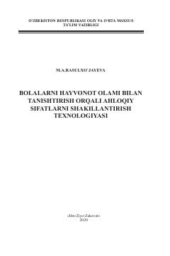

BHMaktabgacha yoshdagi bolalarda tabiatga muhabbat va ahloqiy sifatlarni shakllantirish bo'yicha o'quv qo'llanma.
Ushbu o'quv qo'llanma maktabgacha yoshdagi bolalarni tabiat va hayvonot olami bilan tanishtirish orqali ularda ekologik madaniyat va ahloqiy fazilatlarni shakllantirish metodikasini yoritadi. Kitobda tarbiyachilar uchun bolalarning yosh xususiyatlariga mos ta'lim-tarbiya usullari, tabiatshunoslik fanining nazariy asoslari va ekologik ta'limning ahamiyati bayon etilgan.